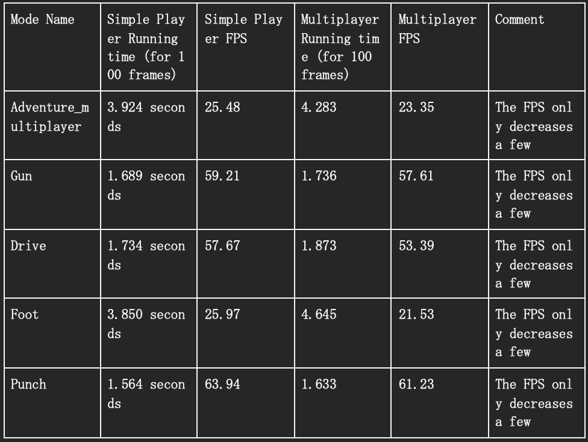
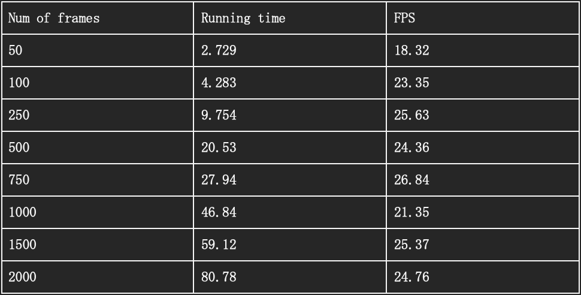
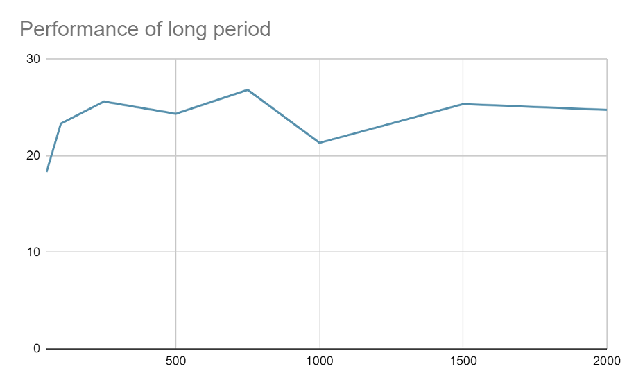
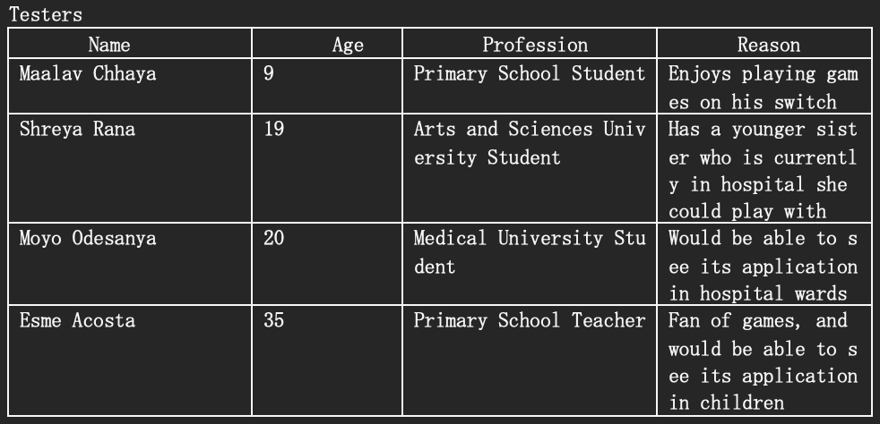

Testing Strategy
To ensure the proper functionality of each implemented module, all team members performed rigorous testing during the development phase. In addition, the system was tested by other teams and a diverse group of potential users through micro builds. This extensive testing provided valuable feedback throughout the development process, which allowed us to make necessary improvements and ensure the quality of the final product. Furthermore, performance testing was conducted to verify the time efficiency achieved by the system.
Performance Testing
The machine used for performance testing had the following specifications:
11th Gen Intel(R) Core(TM) i7-1165G7 @ 2.80GHz 2.80 GHz, 16 GB RAM, and Graphics card NVIDIA GeForce MX450.
In order to find the frame rate for each module on its own, the running time was recorded for 100 frames.
The results are shown in the table below:

The modes used are composed of the following sets of events:
Adventure Extremity:
multiplayer_1_down, multiplayer_1_up, multiplayer_1_left, multiplayer_1_right, multiplayer_2_down, multiplayer_2_up, multiplayer_2_left, multiplayer_2_right, multiplayer_1_attack, multiplayer_2_attack
Gun:
hand_movement_joystick_right_hand_1, hand_movement_joystick_left_hand_2
Drive:
hand_drive_left_right_1, hand_drive_forward_backward_1, hand_drive_left_right_2, hand_drive_forward_backward_2
Foot:
extremity_up_arrow_2，extremity_down_arrow_2，extremity_right_arrow_2，extremity_left_arrow_2,extremity_left_arrow_1,extremity_right_arrow_1,,extremity_up_arrow_1,,extremity_down_arrow_1,
Punch:
hand_punch_simple_left_hand_1, hand_punch_simple_right_hand_1, hand_punch_simple_left_hand_2, hand_punch_simple_right_hand_2
Here you can see that the performance of single-player motion input is quite the same as the multiplayer one, which is great. It means that multiplayer hasn’t imported any burden to the program.
Extended Period Performance
For these tests, the Adventure_multiplayer mode is used.
The time is measured when running the system for 50, 100, 250, 500, 750, 1000, 1500, and 2000 frames respectively.


User Acceptance Testing
Our plan for user acceptance testing was to first identify suitable testers to use and evaulate our implementation, and if we couldn’t find many real users, we would use pseudo users to impersonate the real user. Then after creating test cases for each part of the project, we asked our testers for feedback on each case.

With each mode developed, we created the following tests and gave our testers the following instructions:
Multiplayer Tetris:
1. With your partner, using the MFC select “multiplayer_adventure” and launch.
2. Using google, open the multiplayer Tetris game and wait for the camera to start.
3. Start the game and try to get a line to be deleted by moving the shapes using your hands to hit the extremity triggers to create a row
Multiplayer Tank Game:
1. With your partner, using the MFC select “multiplayer_adventure” and launch.
2. Using google, open the tank game and wait for the camera to start
3. Start the game and play using your hands hitting the extremity triggers and try to win against your opponent.
Multiplayer Foot:
1. With your partner, using the MFC select “multiplayer_foot” and launch.
2. Using google, open the same multiplayer Tetris game and wait for the camera to start.
3. Start the game and try to get a line to be deleted by moving the shapes using your feet to hit the extremity triggers and create a row
Multiplayer Hand Drive:
1. With your partner, using the MFC select “multiplayer_foot” and launch.
2. Using google, open the racing game, and wait for the camera to start.
3. Once the camera starts place your hands in the thumbs up positions, put your right thumb down to accelerate and left thumb down to reverse/brake. Turn your hands left or right depending on the direction being driven.
4. Start the game and try to win against your opponent using your hands.
Multiplayer Light Gun:
1. With your partner, using the MFC select “multiplayer_lightgun” and launch.
2. Using the PlayStation emulator and open PointBlank and wait for the camera to start
3. Once the camera starts, if you are stood on the right, place your left hand in a gun position and shoot by folding your thumb down. If you are stood on the left use your right hand and do the same motion.
4. Start the game and try to win against your opponent using your hands.
Multiplayer Punch:
1. With your partner, using the MFC select “multiplayer_punch” and launch.
2. Using google, search for Drunken Boxing and wait for the camera to start.
3. Once the camera starts, using your arms hold up a punch to release the punch. Your punch should land a certain distance from the camera.
4. Start the game and try to win against your opponent.
Conclusion
In general, the comments made by each tester were positive. Maalav said “I liked the butterfly feature because I’m shorter than my partner” and that it made him feel more comfortable playing the game. He also said that it was “easy to pick up and play without knowing anything extra about how to use it”. He did notice some errors with the extremity triggers when playing Tetris, he said “sometimes the rotate button is too sensitive”. Shreya enjoyed playing the games too, with general positive feedback, particularly when using the Hand Drive mode as she said: “it felt so natural and intuitive to use”. She did mention that it was slightly sensitive when turning but it was easy to adjust to. Moyo also had good feedback, he also particularly enjoyed the driving mode and the punching game. He said the punching mode was the “perfect amount of sensitivity” and that it was “so much fun playing with someone” as it felt as though they “were actually playing a fighting game on a console”. He also mentioned that it was slightly difficult at the beginning to gauge how far away to punch from the camera. Esme said she enjoyed the variety of games, particularly enjoying the Tetris using feet, she said it felt like she “was dancing”. On the other hand, she said the “light gun mode was too insensitive and a bit difficult to use”. In conclusion, our feedback was positive with a few small issues that can be fixed